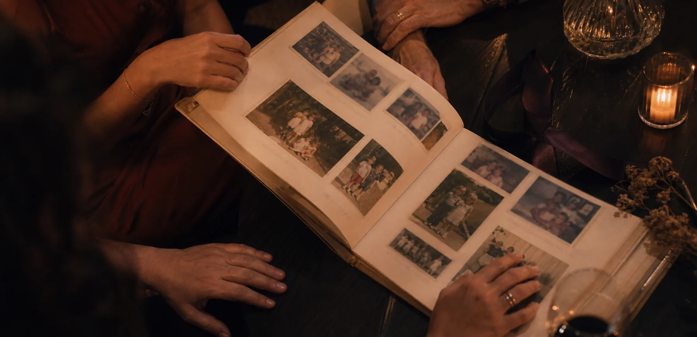
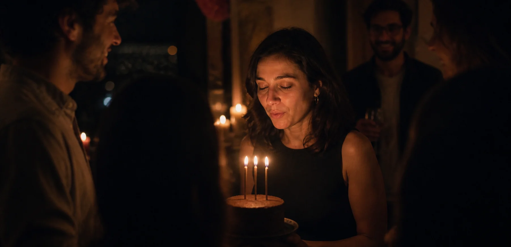

30 AÑOS · UNA NOCHE PARA RECORDAR
Hoy celebramos
Empezar la historia
Hoy celebramos
todo lo que eres.
Las personas, los lugares y los pequeños momentos que te trajeron hasta aquí.
01ANTES DE HOY
No llegaste hasta aquí
de un solo salto.
Llegaste creciendo, probando, cambiando de idea y encontrando a personas que hicieron el camino más bonito.
El día en que una nueva historia empezó sin saber todavía todo lo bueno que traería consigo.

02 · EL ARCHIVO
La vida estaba
La vida estaba
en los detalles.
Fotos desenfocadas, veranos que parecían eternos, sobremesas largas y personas que siempre supieron estar.
“Guardar una foto es decirle a un instante que todavía importa.”
0330 RAZONES
Treinta razones
para celebrar quién eres.
Una por cada vuelta al sol. Aquí mostramos algunas; en una experiencia real, cada frase nace de tu gente.
01 / 30
Porque sabes escuchar incluso cuando nadie encuentra las palabras.
04LAS VOCES
Hay cosas que solo
puede decir tu gente.
“Mi lugar seguro”
“Lo que viene”
05 · LOS QUE ESTÁN
La familia que eliges
La familia que eliges
también te construye.
Los planes improvisados. Las llamadas a deshora. Las personas que conocen todas tus versiones y se quedan.

06 · EL DESEO
Cierra los ojos.
Cierra los ojos.
Este momento es tuyo.
Piensa en algo que todavía no le hayas contado a nadie.
07PARA TI
No celebramos una cifra.
Te celebramos a ti.
Lucía,
Hoy no queríamos regalarte otra cosa. Queríamos devolverte un poco de todo lo que tú has dado: tiempo, refugio, risa y esa manera de hacer que los demás se sientan en casa.
Ojalá vuelvas aquí cuando necesites recordar cuánto te quieren. Y ojalá dentro de otros treinta años sigamos encontrando nuevas razones para celebrarte.
Siempre contigo,
tu gente.
Treinta años vividos.
Todo por delante.
Volver a EXPERIENCE↗
DEMO FICTICIA · PERSONAS, MENSAJES, FECHAS E IMÁGENES CREADOS PARA MOSTRAR EL CONCEPTO.